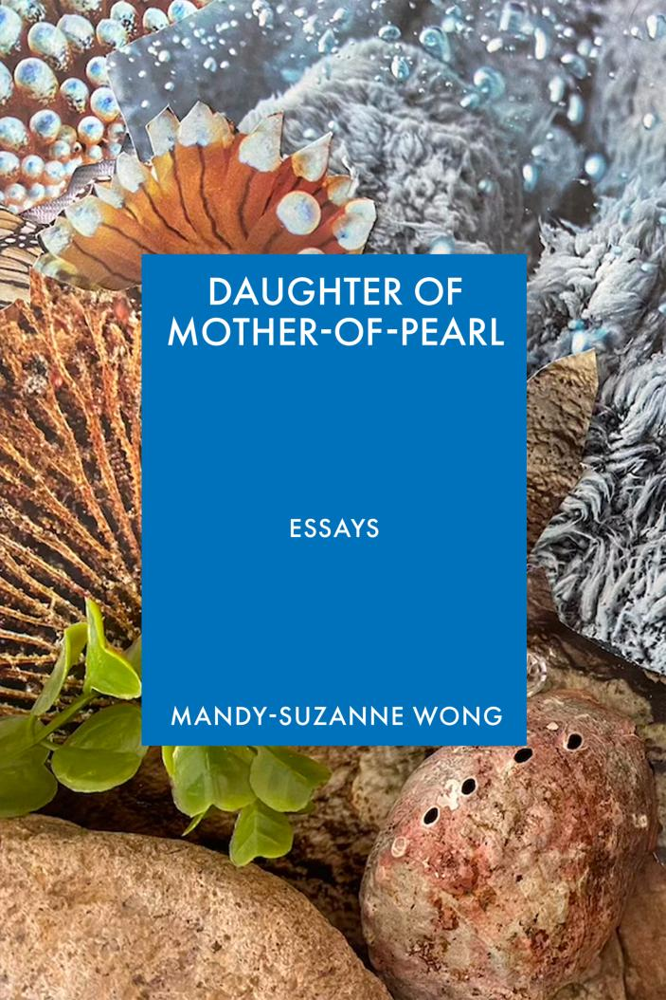

To write a book that advocates for the dignity of animals, in a period of mounting human rights violations that consume media attention, requires guts. The era where essays such as “Consider the Lobster” dominated literary conversation (2005) and slogans such as “Save the Bees” and “Save the Turtles” gained enough traction to influence state policies, feels many generations past—indeed, climate activism has declined in active participation in the past several years, although it has become arguably more pressing as the Trump administration enacts the “single largest deregulatory action in U.S. History” regarding climate protections. However, Mandy Suzanne-Wong argues in her new essay collection Daughter of Mother-of-Pearl that returning to the subject of our marine colleagues is the first step in respecting and securing the rights of other people.
Of course, the line between constructive anthropomorphism and the behavior of many pet parents, for instance, is thin. Many of the people who call their pets their “kids”—some of them going so far as to coerce them into vegetarianism—are quite apathetic about political matters, suggesting that this ascribed subjectivity originates from a different set of values. Indeed, many pet owners place their desire to be with their pets over respecting the laws of community areas and businesses. (I witnessed as a woman’s dog began licking the raw ingredients in a self-serve hot pot establishment, to the alarm and ultimate helplessness of the staff.) Indeed, love for one’s pets seems to be more correlated to the family-oriented jingoism of the American conservative movement than a wider ethos about the sanctity of non-human life.
This lends particular importance to Mandy Suzanne Wong’s focus on marine organisms. While exposure to a variety of land animals has instilled within us a degree of tolerance toward them, marine animals belong to that other world that has largely eluded our conquest. Their anatomical contrast compared to mammals only deepens their mystique; although multiple marine-related conservation movements exist, such as the #SaveCoralReefs campaign, Project AWARE, and New York’s Billion Oyster Project at Governor’s Island, their angle markedly differs from their land-based counterparts: while the decline of terrestrial biodiversity can often be directly observed, the deterioration of marine life largely escapes human sight. Moreover, marine conservationists encounter considerably more friction when establishing the charisma of their species, a strategy that terrestrial conservation initiatives rely on to inspire human aid. However, it is actually when we talk about the dignity of animals that we remember our own dignity as humans.
The conceit of Wong’s essays can seem a little silly at first. “Her diary is her shell; her archive is her body,” she writes of the abalone, referred to by its Japanese name awabi. “Her skin secretes remembrances of light and motion; she shapes and colors the conflicts between her wish for peace and her all-encompassing complexity.” It is easy to dismiss descriptions such as these as contrived or literary; however, is Wong not merely transposing the language that we reserve for our own biological drives—the self-perpetuating mechanisms that we exalt as love and friendship—onto another species? Although the book is a slim 168 pages, its challenge on a reader’s imagination slows the reading process tremendously. As each organism is clarified to embody their inner depths, Wong’s rich, verbose prose transforms readers’ conception of the oceanic world with each page. The book evolves into a partnership between Wong and reader, discarding the carapace of its topic to reveal its mercurial, open core. It comes to life.
Fostering empathy between the reader and that of the unknowable is one of the quests of modern literature. The social novel emerged in the 19th century as a work of fiction that aims to shed light on and reform certain societal issues, crafting a narrative that could drive political change. Upton Sinclair’s The Jungle and Charles Dickens’ Oliver Twist are exemplars of the genre. Although Daughter of Mother-of-Pearl is a work of nonfiction, Wong’s use of imagination rivals that of many novels.
However, it is where Wong’s imagination intersects with her real-life experience with and knowledge of invertebrates that her book shines. Her essay “Ink” is one of these gems. “It is my opinion that, during every moment, even the most fleeting chance encounter, in which an Earthling has the privilege of sharing life with someone of another species, what ought to matter is being comfortable in each other’s company; being attuned to the conditions in which the other might experience comfort or discomfort; being sensitive to cues which might indicate those conditions…we humans call this respect. It is possible to watch and listen for what counts as respect to the snail in front of you.”
She then continues to detail her encounter with a group of purple snails, which she and her friends guide into the ocean. “Respect is not the same as deciphering meaning,” she writes, as she tries to understand the body language of the snails that she was aiding. “It is not anthropomorphism to grant that beings who are not human might feel pain, love, frustration, or anything else. Rather, it is simplistic, anthropocentric arrogance to imagine that only humans can feel, vulgar to think that everybody’s feelings must be intelligible to oneself in order to exist and qualify as feelings.”
Her essays later in the collection shift from chronicling the behavior of animals to integrating them with episodes of human intervention. “fragmen / lamen-tations” collocates the interiorities of oysters, mussels, and ama (海女, or sea women) with the development of the Japanese pearl industry, originating from the West’s demand that the Japanese Empire open its borders. The inclusion of human stories among those of marine life does not diminish or ridicule the hardship that the ama faced; rather, its absorption into this lyric of feeling reinforces the dissonance between individual experience and that of national and corporate personhood.
Wong’s later essay “Captions Unmoored: Awabi-tori” drives home the ultimate allegiance between the awabi-tori (Japanese abalone divers) and the awabi, granting a certain dignity to the profession that has been lost amid a wider revulsion toward the industrial meat industry. “Unseen underwater labor of the ama against life forces, their own bodies’ breath instincts, the life instincts of awabi. To nourish Amaterasu, whose life force is the vitality of everything.” Life taken to nourish life elsewhere: the original law of the world. “History is stitching snails and women into one another. Red thread crosses the awabi-tori’s body in a pattern like growth rings in an awabi’s shell…life bleeding into death, death into life: death of awabi, awabi-tori’s life and livelihood.”
By merging the language of people and that of marine life, Wong advocates for the unity of humanitarian and environmental struggle. She calls zebra mussels “immigrants”; she refers to invasive snails as “refugees,” identifying flaws within scientific arguments about “destroying ‘aliens’ and favoring ‘natives.’” Once again, what might originally come across as a tasteless comparison between animal rights and the wide-scale violations of justice occurring within our own species instead demonstrates the necessity of continuing to fight for climate justice as abuse of human rights persists abroad.
Daughter of Mother-of-Pearl is a work of beauty, imagination, and depth. Most importantly, it advances a new perspective on how we can fight for good in this world—and suggests that a new code of justice must rely on compassion, instead of identification, to endure.